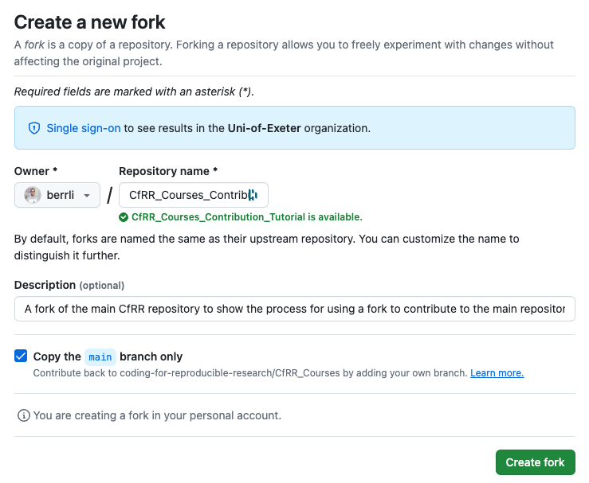
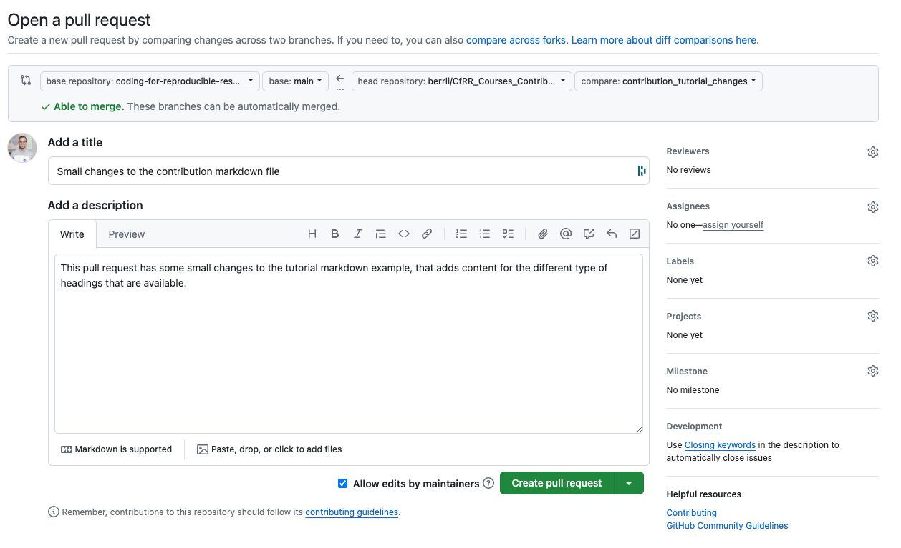

Contributing to CfRR#
Why Contribute?#
The Coding for Reproducible Research (CfRR) training initiative has been a collaborative effort since the program’s start; as such, we are always interested in collaborating with anyone who wants to help expand the available resources. By contributing, you can add to the existing content, help others, and potentially practice skills you have developed through CfRR training programs such as Introduction to Version Control With Git and GitHub!
How Do I Contribute?#
There are a range of different ways for you to engage with the CfRR training program depending on the skillset you currently have, and the skillset you want to develop. There are three key ways in which you can engage with the CfRR training program, including (1) becoming a helper within workshops and helping to deliver training workshops to individual across the university, (2) identify and highlight issues with the current material on the website, or (3) create and contribute your own course to the CfRR program. Each of these different methods of contributing to the program are discussed in more depth below.
Become a helper#
When the CfRR delivers a workshop, the general format that is followed is to have a course leader who is responsible for delivering the content itself, in the form of being the individual who stands at the front of the workshop and talks through the content, conducting the live programming examples and providing overall management for the workshop. Alongside the course leader, we have several course helpers who answer any questions during the workshop, ensuring that no one who attends the workshop gets left behind. If you have experience in some of the offered content and would be interested in becoming a course helper, please get in touch with the team at our email address below. To help us manage the emails better, we would be grateful if you could start the email subject as ‘EOI Course Helper: {Course Name} {Your Name}”.
CfRR Email Address: codingforreproducibleresearch@exeter.ac.uk
Highlighting Issues#
If you would like to contribute to the program but don’t have the time to become a helper or develop course content. Auditing the course content is an excellent way to refresh your understanding of content and help improve the CfRR program. While due care is taken to ensure that the program’s material is accurate and up to date, mistakes do happen, and some of the content on the website may be incorrect. It might also be the case that you think there is a better way to explain a concept or add additional context to part of a course. We want to make the CfRR content the best possible, so it’s better to raise it and verify even if you are unsure if the content needs changing. We are a very friendly bunch, so we are more than happy to have feedback on the program.
Types of Issue#
Some of the potential things that could be highlighted include:
Typographical Errors: Misspelling, incorrect punctuation, grammatical error and spacing issues etc.
Factual Errors: Incorrect scientific or mathematical data, misstated principles, incorrect citation or attribution etc.
Content Clarity and Comprehension: Ambiguous statements, poorly explained concepts, jargon not explained etc.
Formatting and Layout Issues: Inconsistent font usage, poor image quality, mismatched or misaligned elements etc.
Technical Errors: Broken links, non-functional interactive elements, issues with embedded media, accessibility issues (e.g. lack of alt text for images) etc.
Cultural and Bias Concerns: Content that may be culturally insensitive or offensive, gender or racial biases, steoetyping, lack of inclusivity etc.
Outdated Content: Information not reflecting the latest research or developments, old statistics or data, References to outdated technologies or practices etc.
Logical Fallacies or Reasoning Errors: Oversimplification, Hasty generalizations, Contradictions or inconsistencies in content etc.
The above list is meant to provide some examples, but is not meant to be exhaustive. If you find an issue that is not on the list please do still raise it, and we can add that type of issue to the list!
Creating an GitHub Issue#
If while going through the content of the website you notice that there is an error then the way in which to let us know is to raise a GitHub Issue. You are able to do this easily from the website, simply click the Github Icon in the top right of the page where the issue is, and click Open Issue, as shown below.
Github Issue Example#

Making Changes#
The final way to contribute to the CfRR program is to make changes to the content of CfRR yourself. We request that you make use of the forks of the central CfRR repository to do this. The steps you will need to follow are below, but if you are struggling with them, it might be worthwhile to refer to the Introduction to Version Control with Git and GitHub course delivered within the CfRR program.
Create a Forked Repository#
Access Original Repository: Navigate to the CfRR repository, found here: coding-for-reproducible-research/CfRR_Courses
Fork the Original Repository: Click on the
Forkbutton at the top right corner of the repository page. This will create a copy of the repository under your personal GitHub account.Access Fork Repository: Find the forked repository in your GitHub profile.
Clone Fork Repository: Click on the
Codebutton, copy the URL, and run the following command within your terminal to clone the forked repository to your local machine:git clone https://github.com/YOUR-USERNAME/REPO-NAME.git
Creating a Fork Form#

Make Changes in Forked Repository#
Navigate to Repository Directory: On your local machine, you will then need to navigate to the repository directory that has just been downloaded, achieved with:
cd REPO-NAMECreate a New Branch: Create a new branch for the changes you want to make within the repository, achieved with
git checkout -b your-branch-nameMake Changes: Make the necessary changes to the content, such as fixing issues, adding a new course etc.
Stage your changes: Add the files you have changed to the staging area; this can be done for all files within the current repository with
git add .Commit your changes: Commit the changes to the branch with the following command:
git commit -m "Description of the changes you madePush your changes: Push the changes that have been made to your forked repository on GitHub with the following command:
git push origin your-branch-name
Contribute back to the Main CfRR Repository#
Github Forked Repository: Navigate to the repository on GitHub where you pushed the branch.
Create a Pull Request: At the top of the GitHub page, you should see a prompt to create a pull request for the branch you pushed; click on
Compare and Pull Request.Complete Pull Request Form Provide both a title and a description for the pull request.
Select the base repository and branch: Ensure that the base repository is set to the original repository and the base branch is the branch you want to merge into (
mainfor CfRR_Courses).Submit the Pull Request: Click on
Create Pull Requestto submit the pull request and allow us, the central CfRR, to integrate the changes into the main materials.
Pull Request Banner#

Pull Request Form#
